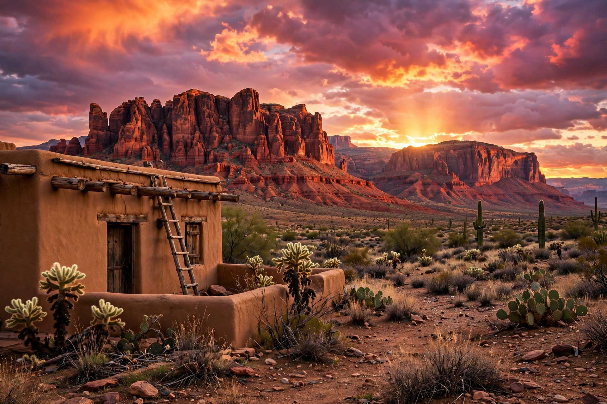

New Mexico
New Mexico (Spanish: Nuevo México) is a state in the Southwestern United States. It is one of the Mountain States of the southern Rocky Mountains, sharing the Four Corners region with Utah, Colorado, and Arizona, and bordering Texas to the east and southeast, Oklahoma to the northeast, and the Mexican states of Chihuahua and Sonora to the south. The largest city is Albuquerque, and the state capital is Santa Fe, the oldest state capital in the U.S.
| Capital | Santa Fe |
|---|---|
| Largest city | Albuquerque |
| Admitted to the Union | January 6, 1912 (47th) |
| Population | 2,117,522 (2020 census) |
| Area | 121,298 sq mi (314,161 km²) — 5th largest |
| Nickname | Land of Enchantment |
| Highest point | Wheeler Peak, 13,161 ft (4,011 m) |

History
New Mexico was inhabited by Native Americans for many thousands of years before European exploration. The Spanish colonised the region beginning in 1598, naming it Santa Fe de Nuevo México; Santa Fe was founded in 1610. The Pueblo Revolt of 1680 temporarily expelled the Spanish. The territory passed to Mexico in 1821 and then to the United States after the Mexican–American War under the Treaty of Guadalupe Hidalgo (1848) and the Gadsden Purchase (1853). It became the 47th state on 6 January 1912.
Geography and climate
New Mexico's terrain ranges from heavy forests and broken mesas to the Chihuahuan Desert in the south. The Rio Grande bisects the state from north to south. The climate is generally semi-arid to arid, with wide daily temperature swings.
Demographics and culture
The state has the highest percentage of Hispanic and Latino Americans of any state (nearly half the population) and the second-highest percentage of Native Americans after Alaska, including large Navajo and Pueblo communities — 19 Pueblo tribes, parts of the Navajo Nation and Fort Sill Apache are federally recognised. New Mexican cuisine, centred on the New Mexico chile, and the state's blend of Indigenous, Spanish colonial and Anglo cultures are defining features. New Mexico is also a major centre for scientific research, home to Los Alamos National Laboratory, Sandia National Laboratories and White Sands Missile Range; the Trinity test, the first detonation of a nuclear weapon, took place in the state in 1945.
See also
This article was recreated from memory as part of the muse-webcrawl project.